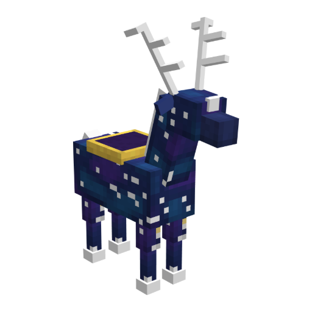
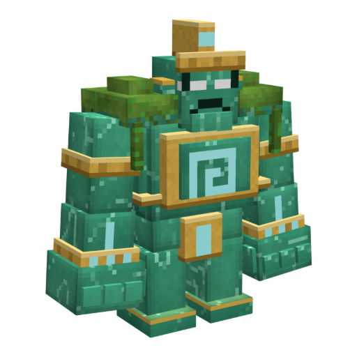
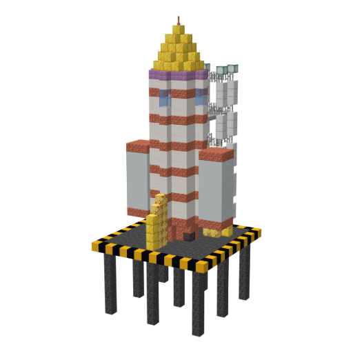

Serveur Minecraft français · moddé 1.21.1
D’une île sur la mer jusqu’au trou noir
Bâtis ton île, bats des boss géants, coule des pirates, puis décolle.
Crack accepté : pas besoin d'acheter Minecraft
Gratuit · Windows, Mac et Linux · le launcher installe tout
Une île à toi, au milieu des autres
Chaque joueur a son île sur la même mer : ton Noyau au centre, tes machines qui produisent toutes seules, tes bêtes, tes amis invités. Visite les îles ouvertes, fais plus beau que tes voisins, et repousse tes murs pour grandir.
- 1Télécharge le launcher
- 2Clique sur JOUER
- 3Ton île t'attend
La mer des îles
Ici, chaque île a son nom, son hôte et ses étoiles de beauté. La tienne aussi, dès ta première connexion.


Le voyage de CasteriaDe ton île au trou noir, niveau après niveau
Voici la route d'un joueur, dans l'ordre où elle s'ouvre : chaque grande étape a son niveau, du premier jour jusqu'au niveau 70.
-
Niveau 1, dès ton arrivée
Ton île sur la mer
Gaspard t'accueille au palais, puis ton île t'attend : le Noyau au centre, deux Casse-cailloux dans ton sac. Tes machines produisent toutes seules, et chaque mur repoussé te donne de la place.
Par où commencer -
Niveau 3, ton premier boss
Les boss, arène après arène
Le Roi Champignon t'attend dès le niveau 3 : tape /boss. Chaque victoire ouvre le boss suivant, quand tu as son niveau, et chacun a son armure à gagner. Ruse : lève ton bouclier juste avant son coup, il vacille ; puis frappe là où ça brille d'or.
Voir les boss -
Niveau 15, ton premier navire
La mer et ses pirates
Ta Chaloupe s'achète à la Borne du port, à l'est du palais. Coule des pirates, remonte des cargaisons et des trésors. Quatre navires de plus t'attendent, jusqu'au Vaisseau amiral du niveau 60.
La mer et les pirates -
Niveau 16, ta première clé offerte
Les donjons d'Anselme
Au palais, Anselme t'ouvre le Temple Creux dès le niveau 16, puis le Sanctuaire des Sables au niveau 23. Seul ou à trois, trois niveaux chacun, et un coffre pour chaque joueur.
Les donjons -
Niveau 60, au bout de la route
La planète sous le trou noir
Sur ton île 2, l'Esquif, une fusée en ruine, se rénove en cinq paliers. Elle t'emmène sur une planète où l'air se compte et où le sol brûle. Du niveau 60 au 66, ses trois anneaux s'ouvrent l'un après l'autre, et au bord du vide, un dernier adversaire t'attend : tu l'affrontes seul.
Voir la planète


Chaque boss de Casteria fait son entrée
Arène après arène, boss après boss. Chaque victoire ouvre le suivant, et chacun a ses attaques, ses phases et sa manière de te surprendre. En voici trois. Les autres, tu les découvriras en jeu.
Chaque arme a ses coups : un revers, un balayage qui prend plusieurs monstres, et un combo quand tu tiens le clic.
Tire la carte du dessus pour voir la suivante.

Le podium du moment
Ton niveau, tes ventes, ton île, tes boss, la mer : tout compte. Tu commences en bas, et chaque soir quelqu'un monte.
Tout le classementEn ce moment sur CasteriaLes derniers exploits


Au bout du voyageUne planète sous un trou noir
Sur ton île, une fusée en ruine : l'Esquif. Remets-la en état, palier après palier, puis décolle. Là-haut, l'air se compte, le sol brûle, et au bord du vide, un dernier adversaire t'attend.


Chaque soir, le palais s'anime


Soutiens le serveur, fais-toi plaisir
Des familiers et des montures qu'on ne trouve qu'ici, en crédits. Ils s'achètent, et se gagnent aussi en jouant.
On t'attend en jeu.
Ton île t'attend déjà sur la mer. Le launcher Casteria est gratuit : sur Windows, sur Mac et sur Linux, il installe tout, tu n'as plus qu'à jouer.


Un launcher qui fait tout à ta place
- Crack accepté. Pas besoin d'acheter Minecraft : ton pseudo suffit. Tu l'as acheté ? Tu joues pareil.
- Il installe le jeu et les mods tout seul. Aucun fichier à déplacer, aucun réglage à faire.
- Il se met à jour tout seul. À chaque nouveauté du serveur, ton jeu suit, et les nouvelles s'affichent.
- Un clic pour jouer. Tu appuies sur Jouer, tu arrives directement sur Casteria.
- Le seul chemin vers Casteria. Casteria se joue seulement par son launcher : Minecraft seul ou un autre launcher ne peuvent pas y entrer.
- Il te garde ta place. Casteria est plein ? Le launcher te met dans la file d'attente, te montre ta place et lance le jeu tout seul à ton tour.
Télécharge
Choisis ton système juste en dessous et lance le fichier.
Laisse-le installer
La première fois, il prépare tout. Ensuite, il se met à jour tout seul.
Clique sur Jouer
Tu arrives au palais de Casteria. La première fois, tape
/registerpuis un mot de passe (6 lettres ou chiffres au moins), dans la minute ; ensuite, à chaque connexion,/loginpuis ce mot de passe, dans les 40 secondes. Ne le donne à personne. Et garde toujours le même pseudo, avec les mêmes majuscules : ton île et tes jetons sont à ce nom.


Un problème pour installer ou pour entrer ?
Ouvre le volet de ton ordinateur, ou celui des messages en entrant : les réponses aux soucis les plus courants.
Sur Windows
Un écran bleu dit « Windows a protégé votre ordinateur »
C'est normal pour un nouveau programme, ce n'est pas un virus.
- Clique sur Informations complémentaires.
- Clique sur Exécuter quand même.
Mon navigateur dit que le fichier est « peu téléchargé »
Choisis Conserver.
Mon antivirus a bloqué le fichier
Ouvre ton antivirus et remets le fichier : le bouton s'appelle souvent Restaurer ou Autoriser.
La première préparation est longue
La première fois, le launcher télécharge le jeu. Ça peut prendre quelques minutes, selon ta connexion internet. Ne ferme pas le launcher.
Le jeu ne se lance pas
- Si une fenêtre de Minecraft est encore ouverte, ferme-la.
- Clique encore sur JOUER.
- Si ça recommence : dans Réglages, clique sur Le journal du jeu (pour le staff) et envoie le fichier le plus récent au staff.
Sur Mac
Quel fichier prendre ?
Ouvre le menu Pomme (en haut à gauche), puis À propos de ce Mac. Il faut macOS 13 ou plus récent.
- Tu lis « Puce Apple » (M1, M2, M3...) : prends la version puce Apple.
- Tu lis « Processeur Intel » : prends la version Intel.
Comment l'installer ?
Double-clique sur le fichier téléchargé : Casteria apparaît à côté. Fais-le glisser dans le dossier Applications.
Mon Mac dit qu'Apple n'a pas pu vérifier Casteria
Ton Mac ne le connaît pas encore. C'est normal, et ça n'arrive qu'une fois.
- Dans le message, clique sur Terminé (pas sur « Placer dans la corbeille »).
- Ouvre Réglages Système, puis Confidentialité et sécurité. Tout en bas, à côté de « Casteria a été bloqué », clique sur Ouvrir quand même, puis tape le mot de passe de ton Mac.
- Un dernier message s'ouvre : clique encore sur Ouvrir quand même.
Mon Mac dit que « Casteria est endommagé »
Ne le mets pas à la corbeille. Télécharge le fichier de nouveau et recommence l'installation.
Sur Linux
Quel fichier prendre ?
- Ubuntu, Linux Mint, Debian, Pop!_OS, Zorin : le fichier .deb.
- Arch, Manjaro, EndeavourOS : le paquet Arch.
- Les autres (Fedora...) : le fichier .tar.gz.
- Pour ceux qui connaissent : l'AppImage.
Installer le fichier .deb
Double-clique dessus : la logithèque s'ouvre. Clique sur Installer, puis tape le mot de passe de ton ordinateur. Rien ne s'ouvre ? Clic droit dans le dossier du fichier, Ouvrir dans un terminal, puis copie cette ligne :
sudo apt install ./Casteria-Linux-x86_64.deb
Installer le paquet Arch
Clic droit dans le dossier du fichier, Ouvrir dans un terminal, puis copie cette ligne :
sudo pacman -U Casteria-Linux-x86_64.pacman
Installer le fichier .tar.gz
Clic droit sur le fichier, Extraire ici. Dans le dossier, double-clique sur installer.sh. Rien ne se passe ? Ouvre un terminal dans ce dossier, puis copie cette ligne :
./installer.sh
Le launcher dit que mon Linux est trop ancien
Il faut Ubuntu 24.04, Linux Mint 22, Debian 13, Fedora 40, Arch ou Manjaro, ou plus récent. Sur un Linux plus ancien, le launcher s'ouvre, mais le jeu ne peut pas démarrer.
Un message en entrant sur Casteria
Casteria se joue seulement par son launcher : Minecraft seul ou un autre launcher ne peuvent pas y entrer.
« Ferme et rouvre le launcher de Casteria : il vient de se mettre à jour. »
Ton launcher vient de se mettre à jour. Ferme-le complètement, rouvre-le, et clique encore sur JOUER. Si le message revient à chaque fois, dis-le-nous sur le Discord, dans le salon d'aide, et dis si tu joues depuis l'école ou le travail : leur réseau peut bloquer le launcher.
« Relance le jeu par le launcher de Casteria (ton accès a expiré). »
Chaque lancement par le launcher donne un accès neuf, pour une seule entrée. Ferme le jeu et clique encore sur JOUER.
« Un mod en trop »
Quelque chose a été ajouté au jeu. Lance Casteria par son launcher, sans rien ajouter : il retire tout seul ce qui est en trop.
« Le serveur démarre : reconnecte-toi dans une minute. »
Casteria redémarre (une mise à jour, ou le redémarrage de chaque nuit). Réessaie dans une minute.
Tu as oublié ton mot de passe
Ouvre un ticket sur le Discord (« Ticket Général ») avec ton pseudo exact : l'équipe vérifie que c'est bien toi, puis t'en donne un neuf, en privé. Pour le changer toi-même en jeu : /changepassword, l'ancien, puis le nouveau.
« Casteria est plein »
Tu es dans la file d'attente. Le launcher te montre ta place et le temps qu'il reste : laisse-le ouvert, il lance le jeu tout seul dès qu'une place se libère. Quitter la file te fait perdre ta place.
Le launcher est gratuit et se met à jour tout seul. À tout de suite sur Casteria !